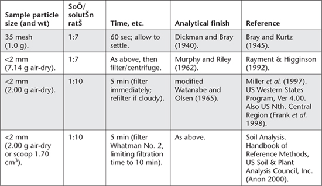

The weakly acidic Bray 1-P test was developed by Bray and Kurtz (1945), particularly for use to assess the P status of acid to neutral soils. The extractant is a dilute solution (0.03 M) of ammonium fluoride (NH4F) and 0.025 M hydrochloric acid (HCl). It was designed to operate at a 1:7 soil/solution ratio with an extraction time of 60 sec. The test integrates the quantity and intensity components of labile P and hence gives a critical value for plant response to P fertiliser that does not vary with changing soil buffer capacity. It sometimes extracts excess P from soils of high Al status and is inappropriate for use on soils containing >2% of dolomite or limestone (Frank et al. 1998).
The Bray No. 2 Extracting Solution contains the same concentration of NH4F but has a higher HCl concentration of 0.1 M. Accordingly, it favours sorbed plus acid-soluble forms of P (McIntosh 1969).
Different groups have modified the specifications of the Bray 1-P test, perhaps sufficiently to affect soil test results (see Table 9.5 for examples).
This fluoride-based test is reported to be suited to predicting yield response to P by legume-based pastures on acid to neutral soils of New South Wales. Otherwise, it is little employed in Australia beyond that State, although it is used internationally, including the north central Region of the United States, where it is the most common soil P test.
Table 9.5. Examples of key method parameters quoted for Bray 1-P, all with an Extracting SolutŠn of 0.03 M NH4F/0.025 M HCl.

While Bray 1-P is a relatively simple and quick soil P test for ‘sorbed P’, the very short extraction time (60 sec) makes it prone to ‘out-of-specification’ operation, which may affect results. This is supported by findings from over 10 years of inter-laboratory proficiency testing in Australasia, where Bray 1-P has consistently been the worst-performed extractable P test in programs operated by ASPAC. The other two tests are Colwell-P and Olsen-P (e.g. Figure 9.2, and Rayment et al. 2000). Clearly, strict adherence to method specifications is imperative. Manual and automated colorimetric procedures are provided as Method 9E1 and 9E2.
As with other soil P tests that employ a molybdenum-blue analytical finish, interferences from silicate, arsenates and Fe3+ are possible, if at elevated concentrations. For example, a Si concentration of ≈4000 mg/L could cause a positive error of ≈1.0 mg PO4-P/L, while ≥50 mg Fe3+/L could cause a negative error due to competition for the ascorbic acid reducing agent. Pre-treatment with sodium bisulfite can eliminate the Fe3+ (and arsenate) interference (Frank et al. 1998) but such action is rarely necessary.